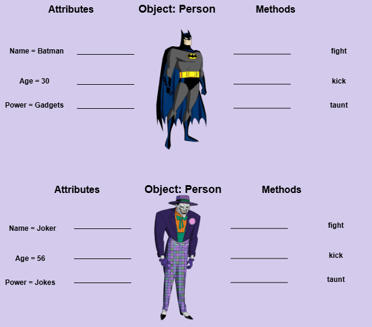

An object is an instance of a class. The blueprint that was established during the
class phase is now actualized into a specialized unit (or object).
Let us look at some examples:

While both Batman and the Joker are instances of the same class, `Person`, they represent two distinct
objects. A primary difference lies in their names: 'Batman' and 'Joker.' Additionally, the attributes of
each object are defined with unique values, providing specific characteristics for each instance, rather
than abstract concepts of the class's overall state.
Objects and State
Through the object's attributes, the object is able to persist it's state. A state represents what the
object looks at a particular time t. For example, the diagram above shows the ages of both Batman and the
Joker. This Age attribute tells us hold old each object is (state), which is likely to change the following
year. All in all, Objects are Classes in action.